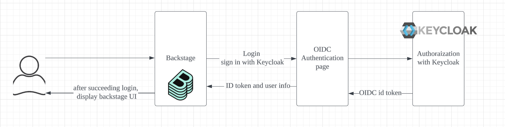
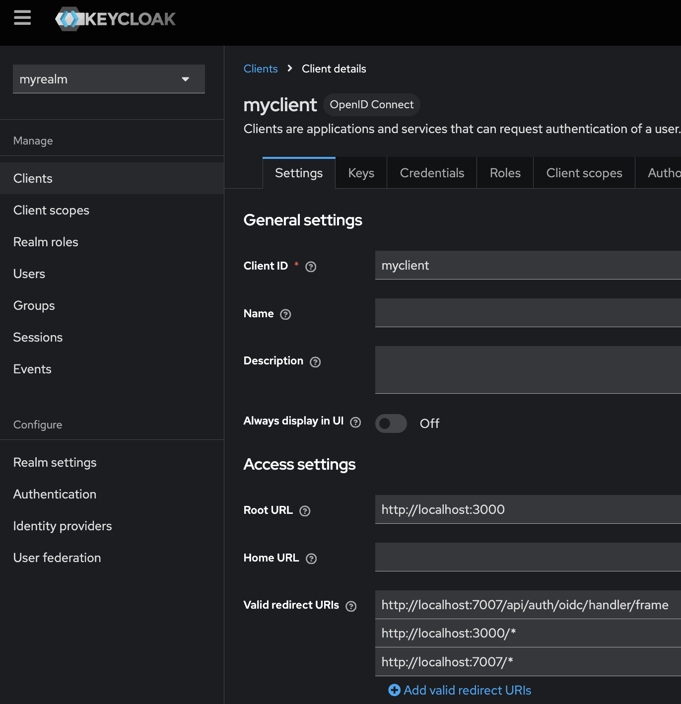
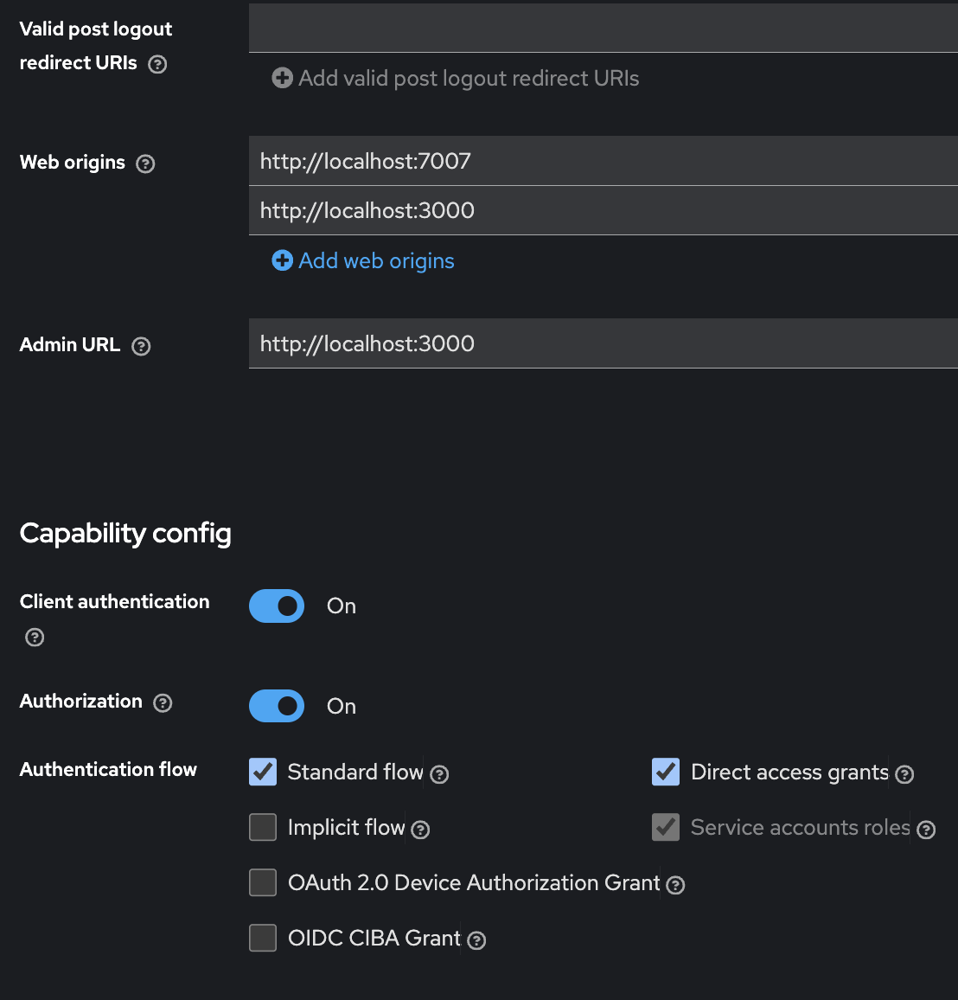
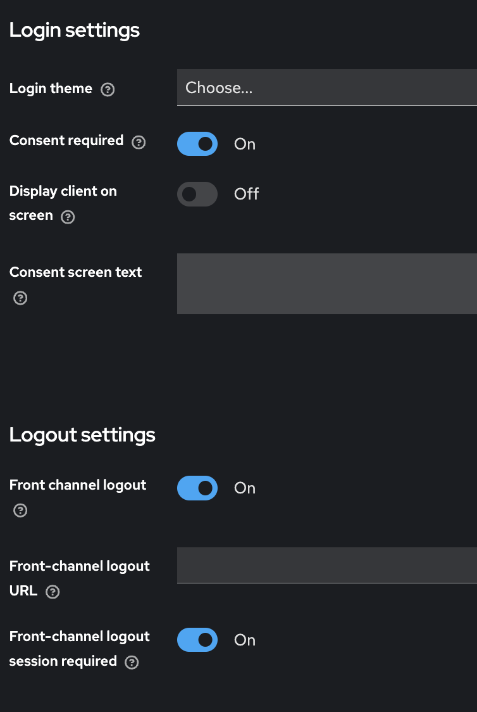
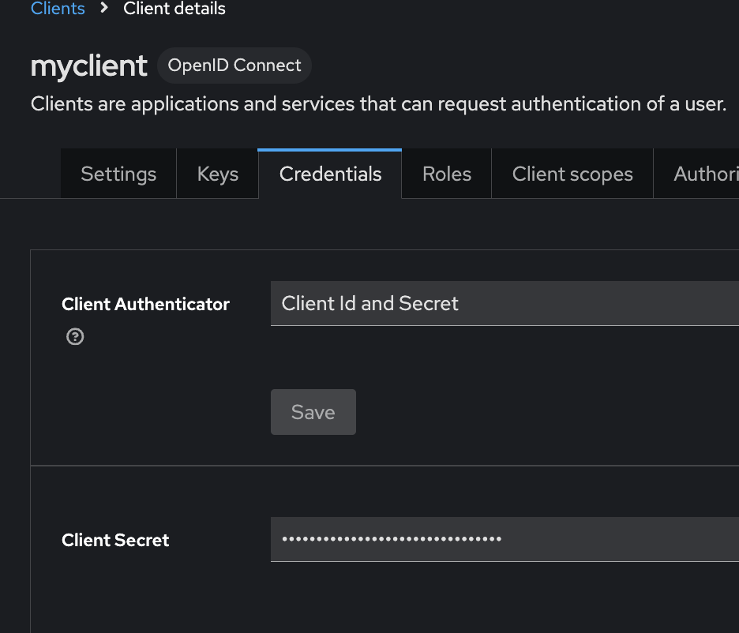
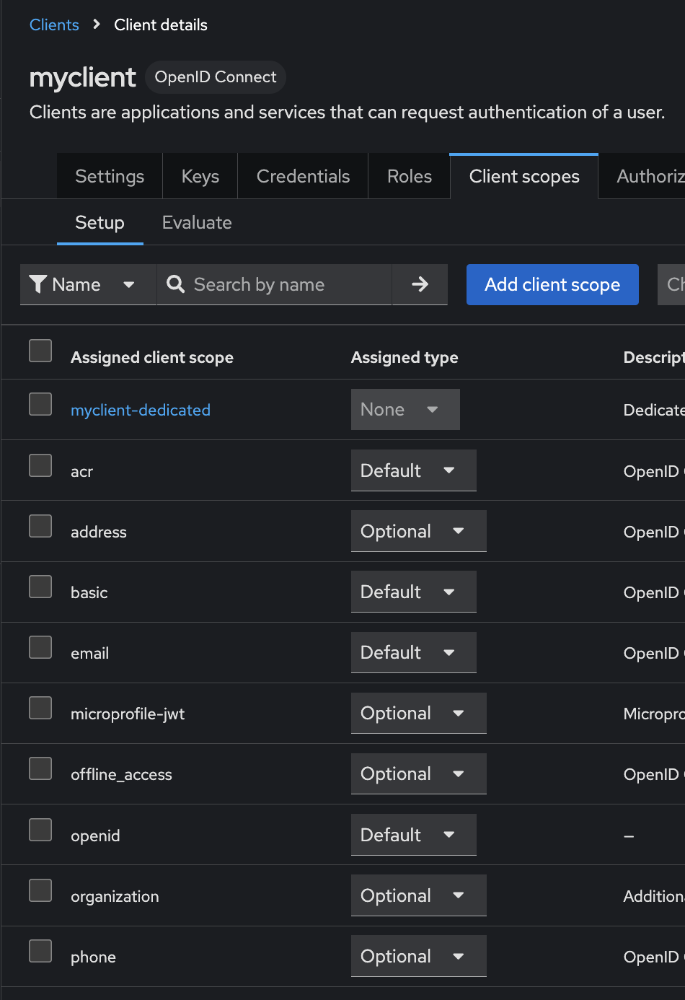

Keycloak configuration with backstage
** use node version 18
Architecture
keycloak is not supported by the backstage. It needs to connect through oidc.
You need to create a clientId and client secret at Keycloak and set it to app-config.yaml.
You need to add a custom function to checking if oidc provider is matching the value returned from keycloak.

Setting app-config.yaml
/my-app/app-config.yaml
** clientId, clientSecret, and matadataUrl need to match to keycloak.
| auth:
session:
secret: ${SESSION_SECRET}
environment: development
providers:
oidc:
development:
metadataUrl: ${AUTH_REALM_URL}/.well-known/openid-configuration
clientId: ${AUTH_MY_CLIENT_ID}
clientSecret: ${AUTH_MY_CLIENT_SECRET}
scopes: "openid profile email"
|
Setting UI for OIDC at App.tsx
/my-app/packages/app/src/App.tsx
This part will be the UI of login window.
1
2
3
4
5
6
7
8
9
10
11
12
13
14
15
16 | components: {
SignInPage: props => (
<SignInPage
{...props}
auto
providers={[
{
id: 'oidc', //this need to match to auth.providers at app-config.yaml
title: 'oidc Login',
message: 'Sign in using oidc',
apiRef: oidcAuthApiRef,
},
]}
/>
),
},
|
Setting api.ts
/my-app/packages/app/src/apis.ts
this function create fetches to keycloak.
1
2
3
4
5
6
7
8
9
10
11
12
13
14
15
16
17
18
19
20
21
22
23
24
25
26
27
28
29
30
31
32
33
34
35
36
37
38
39
40
41
42
43
44
45
46
47
48
49
50
51
52
53 | import {
AnyApiFactory,
ApiRef,
BackstageIdentityApi,
configApiRef,
createApiFactory,
createApiRef,
discoveryApiRef,
oauthRequestApiRef,
OpenIdConnectApi,
ProfileInfoApi,
SessionApi,
} from '@backstage/core-plugin-api';
import { OAuth2 } from '@backstage/core-app-api';
export const oidcAuthApiRef: ApiRef<
OpenIdConnectApi & // The OIDC API that will handle authentification
ProfileInfoApi & // Profile API for requesting user profile info from the auth provider in question
BackstageIdentityApi & // Backstage Identity API to handle and associate the user profile with backstage identity
SessionApi // Sesssion API, to handle the session the user will have while logged in
> = createApiRef({
id: 'oidc-provider', // Can be anything as long as it doesn't conflict with other API ref IDs
});
export const apis: AnyApiFactory[] = [
createApiFactory({
api: oidcAuthApiRef,
deps: {
discoveryApi: discoveryApiRef,
oauthRequestApi: oauthRequestApiRef,
configApi: configApiRef,
},
factory: ({ discoveryApi, oauthRequestApi, configApi }) =>
OAuth2.create({
configApi,
discoveryApi,
oauthRequestApi,
provider: {
id: 'oidc', //this need to match to auth.providers at app-config.yaml
title: 'oidc',
icon: () => null,
},
environment: configApi.getOptionalString('auth.environment'), //this comes from app-config.yaml
defaultScopes: ['openid', 'profile', 'email'],
popupOptions: {
size: {
width: 1000,
height: 1000,
},
},
}),
}),
];
|
Add auth setting
/my-app/packages/backend/src/modules/auths/authProvidersModule.ts
This function catches data from keycloak and check if it is oidc provider.
1
2
3
4
5
6
7
8
9
10
11
12
13
14
15
16
17
18
19
20
21
22
23
24
25
26
27
28
29
30
31
32
33
34
35
36
37
38
39
40
41
42
43
44
45
46
47
48
49
50
51
52
53
54
55
56
57
58
59
60
61
62
63
64
65
66
67
68
69
70
71
72
73
74
75
76
77
78
79
80
81
82
83
84
85
86
87
88
89
90
91
92
93
94
95
96
97
98
99
100
101
102
103
104
105
106
107
108
109
110
111
112
113
114
115
116
117
118
119
120
121
122
123
124
125
126
127
128
129 | import {
providers,
defaultAuthProviderFactories,
ProviderFactories,
} from '@backstage/plugin-auth-backend';
import {
stringifyEntityRef,
DEFAULT_NAMESPACE,
} from '@backstage/catalog-model';
import {
AuthProviderFactory,
AuthResolverContext,
authProvidersExtensionPoint,
createOAuthProviderFactory,
} from '@backstage/plugin-auth-node';
import {
coreServices,
createBackendModule,
} from '@backstage/backend-plugin-api';
import { oidcAuthenticator } from '@backstage/plugin-auth-backend-module-oidc-provider';
async function signInWithCatalogUserOptional(
name: string,
ctx: AuthResolverContext,
) {
try {
const signedInUser = await ctx.signInWithCatalogUser({
entityRef: { name },
});
return Promise.resolve(signedInUser);
} catch (e) {
const userEntityRef = stringifyEntityRef({
kind: 'User',
name: name,
namespace: DEFAULT_NAMESPACE,
});
return ctx.issueToken({
claims: {
sub: userEntityRef,
ent: [userEntityRef],
},
});
}
}
function getAuthProviderFactory(providerId: string): AuthProviderFactory {
switch (providerId) {
case 'oidc':
return createOAuthProviderFactory({
authenticator: oidcAuthenticator,
async signInResolver({ profile }, ctx) {
console.log('oidc called', ctx);
if (!profile.email) {
throw new Error(
'Login failed, user profile does not contain an email',
);
}
// Split the email into the local part and the domain.
const [localPart, domain] = profile.email.split('@');
// Next we verify the email domain. It is recommended to include this
// kind of check if you don't look up the user in an external service.
if (domain !== 'woven-planet.global') {
throw new Error(
`Login failed, '${profile.email}' does not belong to the expected domain`,
);
}
// By using `stringifyEntityRef` we ensure that the reference is formatted correctly
const userEntity = stringifyEntityRef({
kind: 'User',
name: localPart,
namespace: DEFAULT_NAMESPACE,
});
return ctx.issueToken({
claims: {
sub: userEntity,
ent: [userEntity],
},
});
},
});
default:
throw new Error(`No auth provider found for ${providerId}`);
}
}
const authProvidersModule = createBackendModule({
pluginId: 'auth',
moduleId: 'auth.providers',
register(reg) {
reg.registerInit({
deps: {
config: coreServices.rootConfig,
authProviders: authProvidersExtensionPoint,
logger: coreServices.logger,
},
async init({ config, authProviders, logger }) {
console.log('is it called?', authProviders);
const providersConfig = config.getConfig('auth.providers');
const authFactories: ProviderFactories = {};
providersConfig
.keys()
.filter(key => key !== 'guest')
.forEach(providerId => {
const factory = getAuthProviderFactory(providerId);
authFactories[providerId] = factory;
});
const providerFactories: ProviderFactories = {
...defaultAuthProviderFactories,
...authFactories,
};
logger.info(
`Enabled Provider Factories : ${JSON.stringify(providerFactories)}`,
);
Object.entries(providerFactories).forEach(([providerId, factory]) => {
authProviders.registerProvider({ providerId, factory });
});
},
});
},
});
export default authProvidersModule;
|
Add auth setting to index.ts file on the backend
1
2
3
4
5
6
7
8
9
10
11
12
13
14
15
16 | import * as dotenv from 'dotenv';
dotenv.config({ path: '../../.env' }); //add dotenv if you use .env file
import { createBackend } from '@backstage/backend-defaults';
const backend = createBackend();
// auth plugin
backend.add(import('@backstage/plugin-auth-backend'));
// See https://backstage.io/docs/backend-system/building-backends/migrating#the-auth-plugin
backend.add(import('@backstage/plugin-auth-backend-module-guest-provider'));
// See https://backstage.io/docs/auth/guest/provider
// backend.add(import('@backstage/plugin-auth-backend-module-oidc-provider'));
backend.add(import('./modules/auths/authProvidersModule'));
backend.start();
|
Keycloak setting
** local setting
run keycloak locally with docker. create client
https://www.keycloak.org/getting-started/getting-started-docker
client setting

Root url: the URL where backstage running
valid redirect URLs: the URL where keycloak redirect after authenticated. usually to the backend.

client authentication: it enable to generate client secret on credentials tab.


add client secret from here
** create openid scope from Client Scope page and add it to Client->myclient-> client scope tab

add openid for client scope
Run application